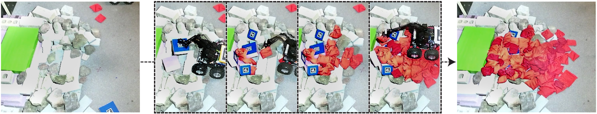

Autonomous Multi-Material Construction with a Heterogeneous Robot Team
[ Watch Movie ]
We present a construction model that allows robots with different construction capabilities, using materials of different physical properties and sizes, to modify unstructured environments in a distributed system.

The
Minimal Additive Ramp Structure
is computed based on local views.
Raw Materials
We present a model and a practical robotic implementation for construction with mixed materials, including rigid foam blocks and compliant bean bags.
Foam Blocks
imitate rigid blocks used in construction.
They are relatively large, so
construction with them can quickly fill the space but due to large discontinuities the
structures might
not be navigable.
Compliant Bags
imitate regolith bags used in construction. Using compliant bags results in navigable structures, but can be slow to construct.
Robot Design
Each robot is a low-cost mobile manipulator made from off-the-shelf components,
capable of maneuvering over irregular terrain.

Castor
is equipped with a gripper to handle compliant bags

Puffer
is equipped with a suction cup to handle foam blocks
Experiments
We demonstrate the approach by running the system on a variety of terrains and with mixed materials, including both deformable and rigid components.
